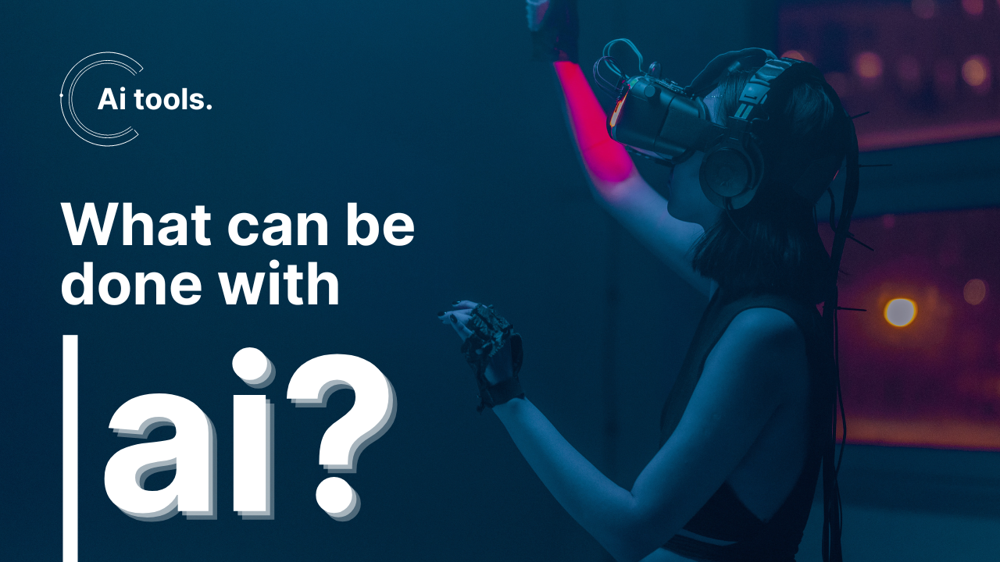
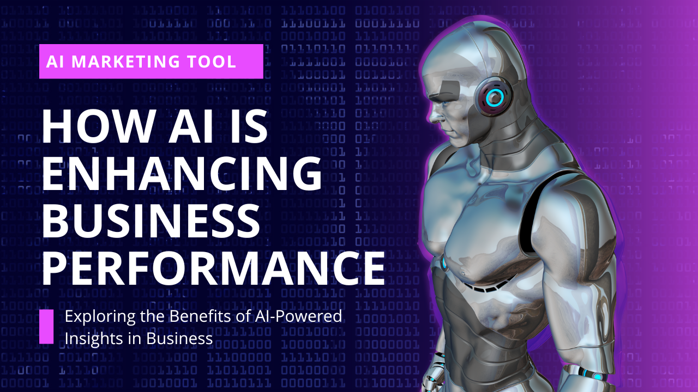

The Future of AI: Revolutionizing Our World
June 8, 2024
Intro

Artificial Intelligence (AI) has become a buzzword that dominates discussions in tech circles, business boardrooms, and even casual conversations. But what is AI, and why is it considered such a transformative force? This blog post will explore the core concepts of AI, its current applications, and the future potential it holds to revolutionize various industries.
What is AI?
At its simplest, AI refers to the simulation of human intelligence in machines programmed to think and learn like humans. These systems can perform tasks that typically require human intelligence, such as recognizing speech, making decisions, and translating languages.
Current Applications of AI
AI's presence is already felt across various sectors, fundamentally altering how we live and work. Here are some significant areas where AI is making an impact:
Healthcare:
Diagnosis and Treatment:
AI algorithms analyze medical data to provide accurate diagnoses and suggest effective treatments. IBM’s Watson, for example, assists doctors by analyzing vast amounts of medical literature to recommend treatments for cancer.
Personalized Medicine: AI helps in creating personalized treatment plans based on individual genetic profiles and health records.
Finance:
Fraud Detection: AI systems detect unusual patterns and anomalies in financial transactions, reducing fraud and increasing security.
Algorithmic Trading:
AI-driven algorithms execute trades at high speed and efficiency, optimizing investment strategies.
Inventory Management:
AI predicts demand and manages stock levels, reducing waste and improving supply chain efficiency.
Transportation:
Autonomous Vehicles:
Companies like Tesla and Waymo are developing self-driving cars that use AI to navigate and make real-time decisions.
Traffic Management: AI systems optimize traffic flow in cities, reducing congestion and improving safety.